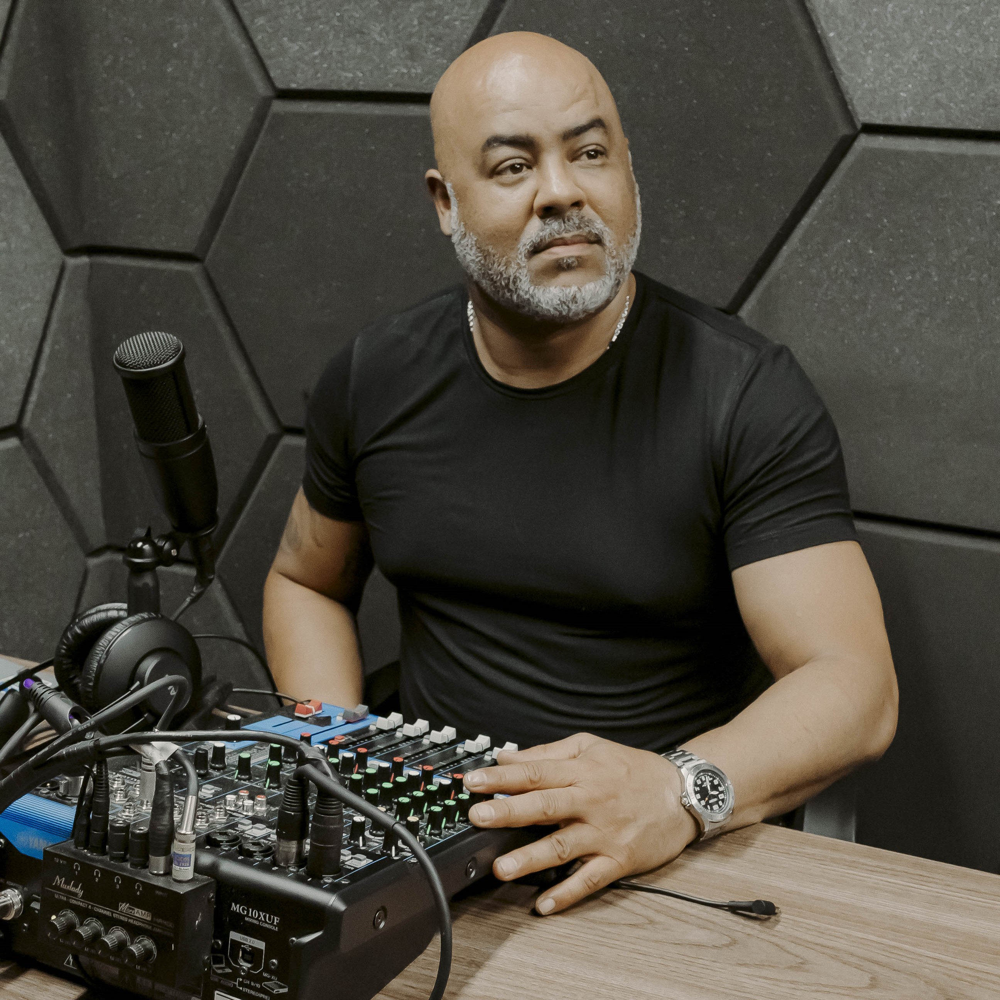
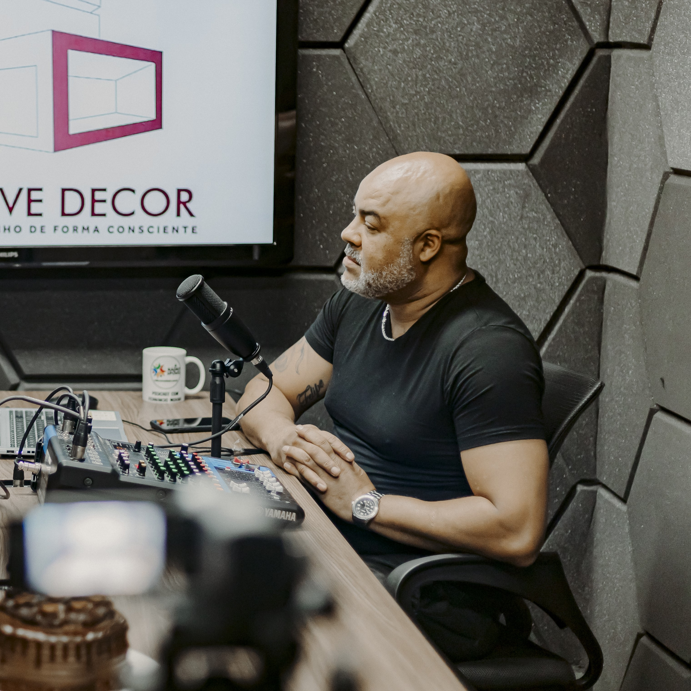
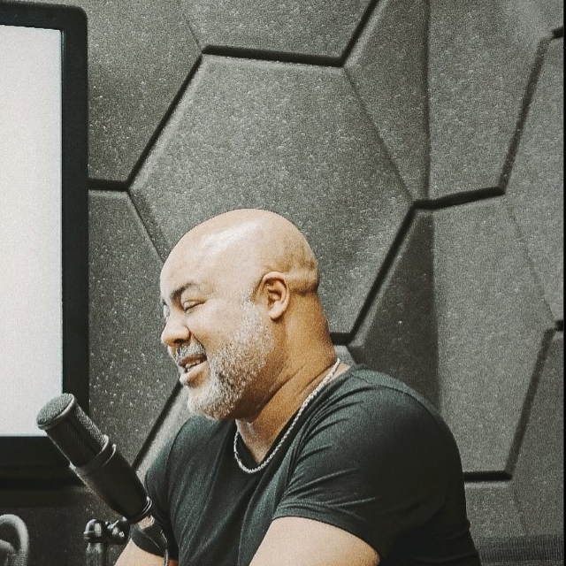
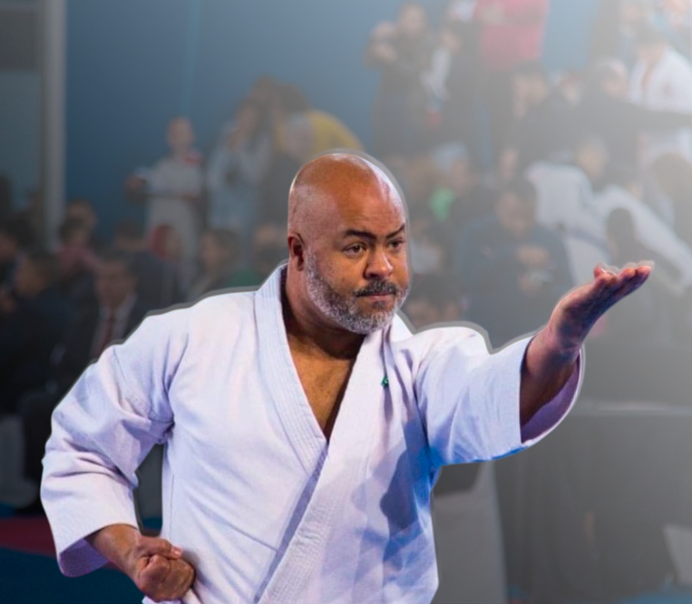
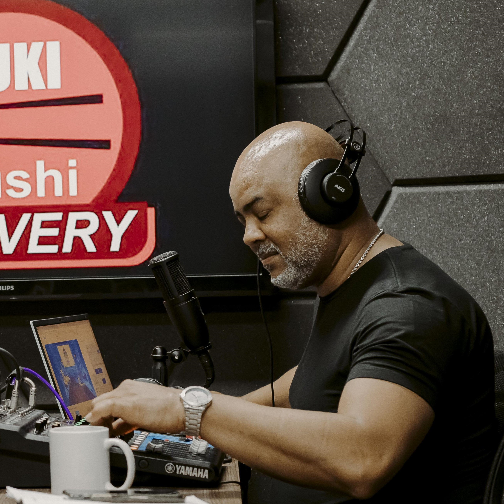
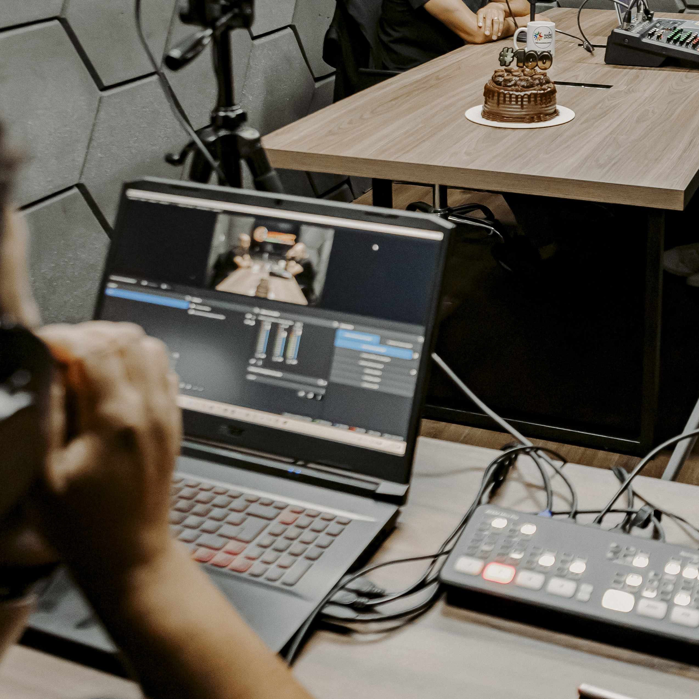
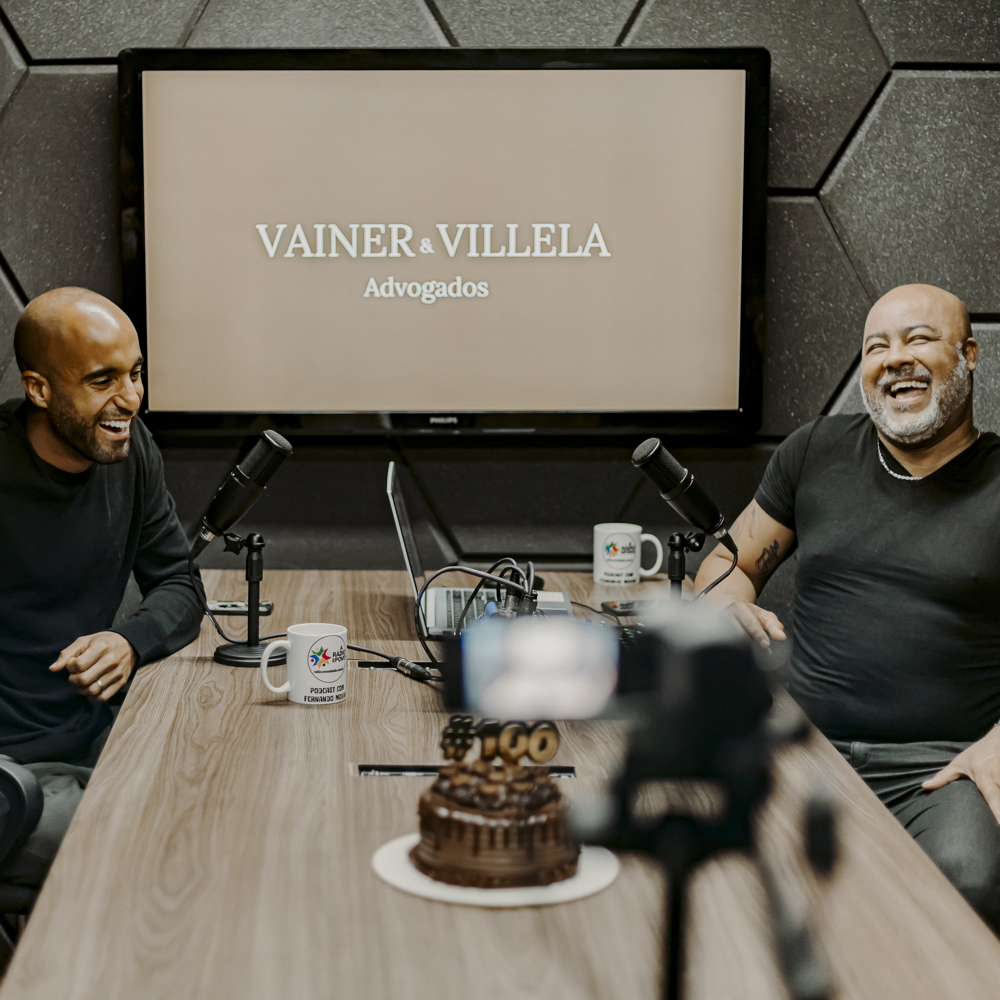
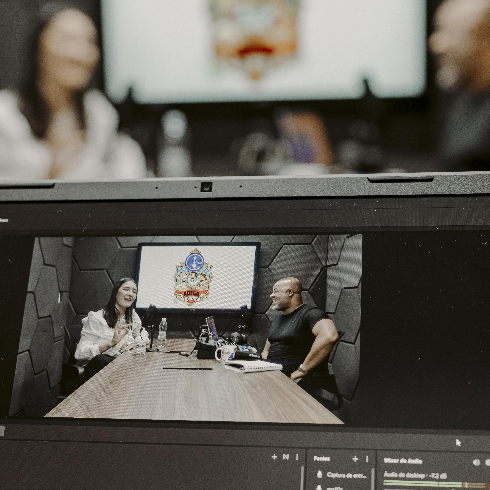

Carregando vídeo...
Nasci em São Paulo, capital.
Cresci rodeado por uma cidade que respira movimento, diversidade e histórias de todos os tipos
e isso com certeza influenciou minha forma de ver o mundo e me comunicar.

Na vida pessoal, uma das minhas maiores inspirações sempre foi Barack Obama
pela forma como ele se comunica, lidera e conecta com as pessoas.
Já como host de podcast, sou muito influenciado pelo Joel Jota, pelo Podpah e pelo Flow.

Gosto de criar um espaço onde o convidado se sinta à vontade pra ser quem ele é de verdade.
Curto quando a conversa flui de um jeito tão natural que a gente esquece que tá sendo gravado.

Sempre fui fã de boa conversa.
Durante a pandemia, percebi o quanto a escuta e a conexão faziam falta.
Foi aí que mergulhei de vez no universo dos podcasts.

Comecei em 2020, no auge da pandemia, fazendo lives.
Em 2023, fui convidado para apresentar o programa na Rádio Comunidade: “De Frente com Fernando Moura”.

No começo, tudo era desafio: parte técnica, credibilidade como apresentador, e principalmente manter a consistência mesmo sem retorno imediato.
A paixão foi o combustível.

Um episódio especial foi com meu primo Lucas Moura, no episódio 100.
Aquilo me marcou muito e mostrou o poder transformador do podcast.

Quero profissionalizar ainda mais, trazer nomes de peso, explorar novos formatos como episódios documentais em vídeo e criar eventos e produtos ligados à marca.
